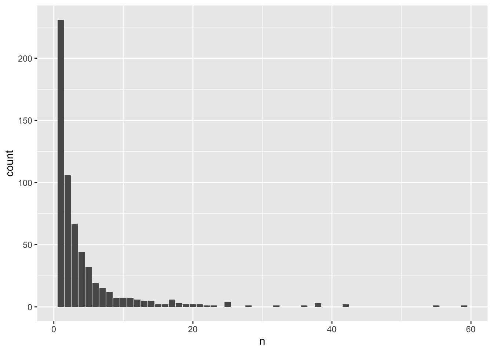

8 Variant annotation
8.1 Using Bioconductor annotation resources
In this example, we illustrate defining aggregation units based on known genes.
First, we load the null model and the AnnotatedDataFrame with sample data, and we open the GDS file.
repo_path <- "https://github.com/UW-GAC/SISG_2021/raw/master"
if (!dir.exists("data")) dir.create("data")
# load the null model
nullmodfile <- "data/null_mixed_model.RData"
if (!file.exists(nullmodfile)) download.file(file.path(repo_path, nullmodfile), nullmodfile)
nullmod <- get(load(nullmodfile))
# load the sample annotation
sampfile <- "data/sample_phenotype_annotation.RData"
if (!file.exists(sampfile)) download.file(file.path(repo_path, sampfile), sampfile)
annot <- get(load(sampfile))
# open the GDS file
library(SeqVarTools)
gdsfile <- "data/1KG_phase3_subset_chr1.gds"
if (!file.exists(gdsfile)) download.file(file.path(repo_path, gdsfile), gdsfile)
gdsfmt::showfile.gds(closeall=TRUE) # make sure file is not already open
gds <- seqOpen(gdsfile)
# make the seqVarData object
seqData <- SeqVarData(gds, sampleData=annot)We use the human genome annotation from Bioconductor to identify genes.
library(GenomicRanges)
# return the variants in seqData as a GRanges object
gr <- granges(gds)
gr## GRanges object with 1120 ranges and 0 metadata columns:
## seqnames ranges strand
## <Rle> <IRanges> <Rle>
## 1 1 970546 *
## 2 1 985900 *
## 3 1 1025045 *
## 4 1 1265550 *
## 5 1 1472676 *
## ... ... ... ...
## 1116 1 248715186 *
## 1117 1 248715606-248715610 *
## 1118 1 248761613 *
## 1119 1 248894546 *
## 1120 1 249149558 *
## -------
## seqinfo: 1 sequence from an unspecified genome; no seqlengthslibrary(TxDb.Hsapiens.UCSC.hg19.knownGene)
# find variants that overlap with each gene
txdb <- TxDb.Hsapiens.UCSC.hg19.knownGene
gr <- renameSeqlevels(gr, paste0("chr", seqlevels(gr)))
ts <- transcriptsByOverlaps(txdb, gr, columns="GENEID")
# simplistic example - define genes as overlapping transcripts
genes <- reduce(ts)
genes <- renameSeqlevels(genes, sub("chr", "", seqlevels(genes)))
genes## GRanges object with 384 ranges and 0 metadata columns:
## seqnames ranges strand
## <Rle> <IRanges> <Rle>
## [1] 1 955503-991499 +
## [2] 1 2160134-2241652 +
## [3] 1 2985742-3355185 +
## [4] 1 6484848-6521004 +
## [5] 1 6845384-7829766 +
## ... ... ... ...
## [380] 1 245912642-246670644 -
## [381] 1 246703863-246729565 -
## [382] 1 247108849-247242115 -
## [383] 1 247463622-247495045 -
## [384] 1 249144203-249153315 -
## -------
## seqinfo: 93 sequences (1 circular) from hg19 genomeWe can run a burden test, setting a maximum alternate allele frequency of 0.05 to exclude common variants. We previously used the SeqVarWindowIterator function to create an iterator object with variants grouped in sliding windows. Here, we use the SeqVarRangeIterator function to create an iterator object with variants grouped by genes as we defined above.
# create an iterator where each successive unit is a different gene
iterator <- SeqVarRangeIterator(seqData, variantRanges=genes, verbose=FALSE)
# run a burden test on the rare variants in each gene
library(GENESIS)
assoc <- assocTestAggregate(iterator, nullmod, AF.max=0.05, test="Burden")## # of selected samples: 1,126head(assoc$results)## n.site n.alt n.sample.alt Score Score.SE Score.Stat Score.pval Est Est.SE PVE
## 1 2 120 116 -1.7298249 0.85445734 -2.0244720 0.04292161 -2.3693073 1.170333 0.0036691881
## 2 1 1 1 -0.0196949 0.08084124 -0.2436244 0.80752171 -3.0136157 12.369924 0.0000531359
## 3 2 9 9 0.1876746 0.26918240 0.6972022 0.48567628 2.5900734 3.714953 0.0004351750
## 4 2 27 27 0.1793323 0.43539824 0.4118811 0.68042656 0.9459871 2.296748 0.0001518764
## 5 5 168 147 2.2714697 1.12247809 2.0236205 0.04300921 1.8028151 0.890886 0.0036661023
## 6 1 1 1 0.1554388 0.10277775 1.5123777 0.13043779 14.7150302 9.729732 0.0020477031head(assoc$variantInfo)## [[1]]
## variant.id chr pos allele.index n.obs freq MAC weight
## 1 1 1 970546 1 1126 0.003996448 9 1
## 2 2 1 985900 1 1126 0.049289520 111 1
##
## [[2]]
## variant.id chr pos allele.index n.obs freq MAC weight
## 1 7 1 2185887 1 1126 0.0004440497 1 1
##
## [[3]]
## variant.id chr pos allele.index n.obs freq MAC weight
## 1 14 1 3168319 1 1126 0.0004440497 1 1
## 2 15 1 3293503 1 1126 0.0035523979 8 1
##
## [[4]]
## variant.id chr pos allele.index n.obs freq MAC weight
## 1 36 1 6489967 1 1126 0.004440497 10 1
## 2 37 1 6503405 1 1126 0.007548845 17 1
##
## [[5]]
## variant.id chr pos allele.index n.obs freq MAC weight
## 1 38 1 7002151 1 1126 0.0057726465 13 1
## 2 39 1 7056029 1 1126 0.0270870337 61 1
## 3 40 1 7126048 1 1126 0.0004440497 1 1
## 4 41 1 7150846 1 1126 0.0013321492 3 1
## 5 42 1 7612761 1 1126 0.0399644760 90 1
##
## [[6]]
## variant.id chr pos allele.index n.obs freq MAC weight
## 1 43 1 7838322 1 1126 0.0004440497 1 18.2 Aggregating and filtering variants using annotation
Alternatively, we may want to import annotation from other software, such as ANNOVAR or WGSA. The output formats of variant annotation software can be quite complex, but for this exercise we use fairly simple tab-separated text files.
library(dplyr)
snv_annotation <- read.table("data/snv_parsed.tsv", sep="\t", na.strings=".", header=TRUE, as.is=TRUE)
indel_annotation <- read.table("data/indel_parsed.tsv", sep="\t", na.strings=".", header=TRUE, as.is=TRUE)
combined_annotation <- bind_rows(snv_annotation, indel_annotation)Here, we remove variants that are not associated with a gene, group the variants by gene, and filter to intron_variants with a CADD_phred score greater than 3 in just a few lines of code:
combined_annotation %>%
filter(VEP_ensembl_Gene_ID != ".") %>% # remove variants not annotated with a Gene_ID
group_by(VEP_ensembl_Gene_ID) %>% # aggregate by gene
filter(CADD_phred > 3) %>% # filter variants to keep only CADD_phred greater than 3
filter(stringr::str_detect(VEP_ensembl_Consequence, "intron_variant")) %>% # keep intron variants
glimpse() # view the result - 592 variants## Rows: 592
## Columns: 7
## Groups: VEP_ensembl_Gene_ID [170]
## $ CHROM <int> 22, 22, 22, 22, 22, 22, 22, 22, 22, 22, 22, 22, 22, 22, 22, 22, 22, 22, 22, 22, 22, 22, …
## $ POS <int> 15699830, 15699830, 16437047, 16445862, 16813769, 17005147, 17005147, 17005147, 17258770…
## $ REF <chr> "G", "G", "G", "C", "C", "G", "G", "G", "G", "G", "G", "G", "G", "G", "G", "G", "C", "C"…
## $ ALT <chr> "A", "A", "A", "A", "T", "A", "A", "A", "A", "T", "A", "T", "C", "C", "T", "T", "T", "T"…
## $ VEP_ensembl_Gene_ID <chr> "ENSG00000198062", "ENSG00000198062", "ENSG00000227367", "ENSG00000227367", "ENSG0000017…
## $ VEP_ensembl_Consequence <chr> "intron_variant,NMD_transcript_variant", "intron_variant", "intron_variant,non_coding_tr…
## $ CADD_phred <dbl> 3.612, 3.612, 9.729, 3.895, 7.530, 5.332, 5.332, 5.332, 10.450, 9.329, 6.843, 5.353, 11.…Now that we have a set of variants that we can aggregate into genic units, the data needs to be reformatted for input to the GENESIS analysis pipeline. The input to the GENESIS pipeline is a data frame with variables called group_id, chr, pos, ref, and alt. Prepare this data frame and save it for testing (we do not need to filter the variants for this exercise):
aggregates <-
combined_annotation %>%
filter(VEP_ensembl_Gene_ID != ".") %>% # remove variants not annotated with a Gene_ID
group_by(VEP_ensembl_Gene_ID) %>% # aggregate by gene
dplyr::select(group_id = VEP_ensembl_Gene_ID,
chr = CHROM,
pos = POS,
ref = REF,
alt = ALT) # select and rename columns
head(aggregates) # inspect the tibble## # A tibble: 6 x 5
## # Groups: group_id [6]
## group_id chr pos ref alt
## <chr> <int> <int> <chr> <chr>
## 1 ENSG00000230643 22 15589963 G T
## 2 ENSG00000226474 22 15613723 A G
## 3 ENSG00000231565 22 15613723 A G
## 4 ENSG00000224435 22 15628559 C T
## 5 ENSG00000198062 22 15699830 G A
## 6 ENSG00000236666 22 15699830 G AWe can also compute some summary information about these aggregates, such as counting how many genic units we’re using:
length(unique(aggregates$group_id))## [1] 598We can look at the distribution of the number of variants per aggregation unit:
counts <- aggregates %>% group_by(group_id) %>% summarize(n = n())
library(ggplot2)
ggplot(counts, aes(x = n)) + geom_bar()
seqClose(seqData)